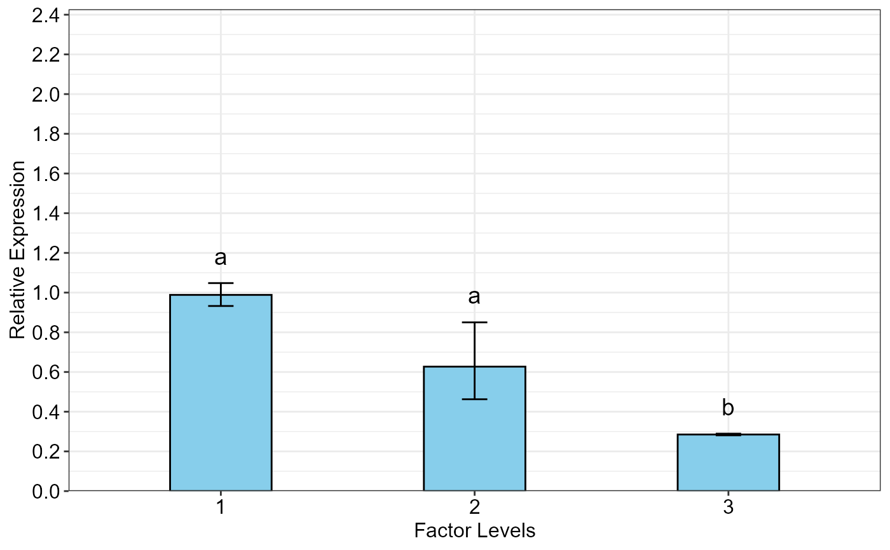

qpcrANOVARE output of a single-factor experiment dataR/oneFACTORplot.r
oneFACTORplot.RdBar plot of the relative expression of a gene along with the standard error (se), 95% confidence interval (ci) and significance. oneFACTORplot is mainly useful for a one-factor experiment with more than two levels.
oneFACTORplot(
res,
width = 0.4,
fill = "skyblue",
y.axis.adjust = 0.5,
y.axis.by = 2,
errorbar,
show.letters = TRUE,
letter.position.adjust = 0.1,
ylab = "Relative Expression",
xlab = "none",
fontsize = 12,
fontsizePvalue = 5,
axis.text.x.angle = 0,
axis.text.x.hjust = 0.5
)an FC data frame object created by qpcrANOVARE(x)$Result function on a one factor data such as data_1factor.
a positive number determining bar width.
specify a fill color.
a negative or positive number for reducing or increasing the length of the y axis.
determines y axis step length.
Type of error bar, can be se or ci.
a logical variable. If TRUE, mean grouping letters are added to the bars.
adjust the distance between the grouping letters to the error bars.
the title of the y axis.
the title of the x axis.
size of all fonts of the plot.
font size of the pvalue labels
angle of x axis text
horizontal justification of x axis text
Bar plot of the average fold change for target genes along with the significance and the standard error or 95% confidence interval as error bars.
The oneFACTORplot function generates the bar plot of the average fold change for target genes along with the significance and the 95% confidence interval as error bars.
# Before plotting, the result needs to be extracted as below:
res <- qpcrANOVARE(data_1factor, numberOfrefGenes = 1, block = NULL)$Result
#> Analysis of Variance Table
#>
#> Response: wDCt
#> Df Sum Sq Mean Sq F value Pr(>F)
#> T 2 4.9393 2.46963 12.345 0.007473 **
#> Residuals 6 1.2003 0.20006
#> ---
#> Signif. codes: 0 '***' 0.001 '**' 0.01 '*' 0.05 '.' 0.1 ' ' 1
#>
#> Relative expression table
#> SA RE LCL UCL se Lower.se Upper.se letters
#> 1 L3 0.9885 0.6379 1.5318 0.0841 0.9325 1.0478 a
#> 2 L2 0.6271 0.4047 0.9717 0.4388 0.4626 0.8500 a
#> 3 L1 0.2852 0.1840 0.4419 0.0208 0.2811 0.2893 b
# Bar plot
oneFACTORplot(res,
width = 0.4,
fill = "skyblue",
y.axis.adjust = 1,
y.axis.by = 0.2,
errorbar = "se",
show.letters = TRUE,
letter.position.adjust = 0.05,
ylab = "Relative Expression",
xlab = "Factor Levels",
fontsize = 12)
